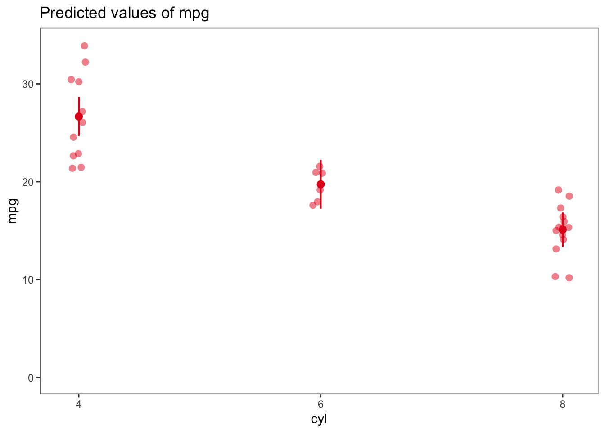
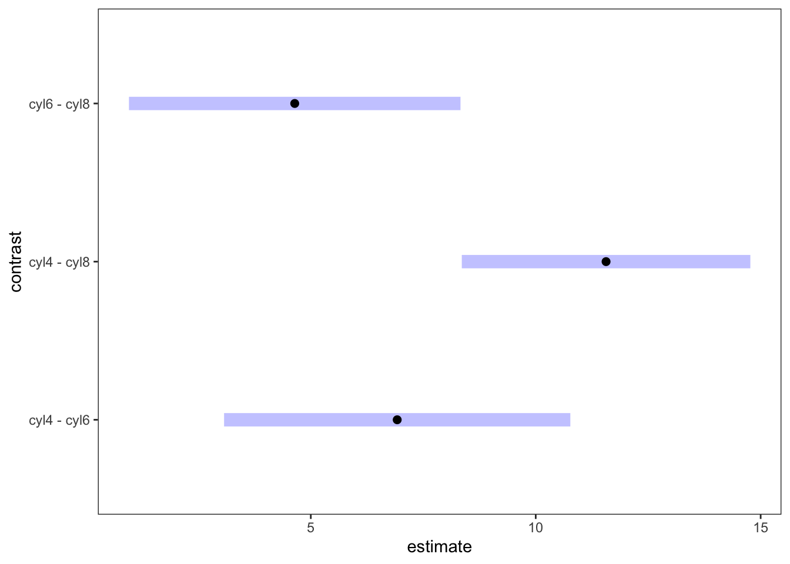
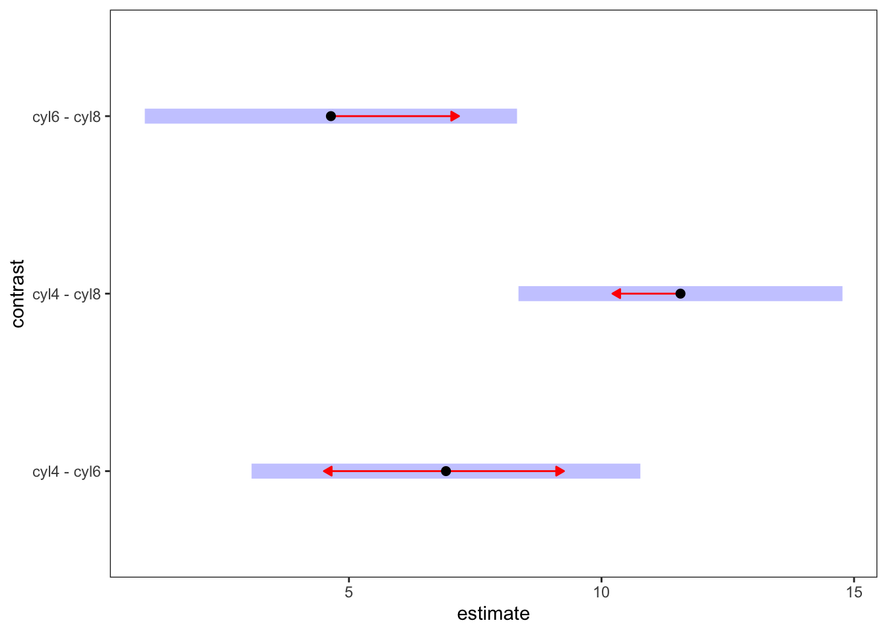
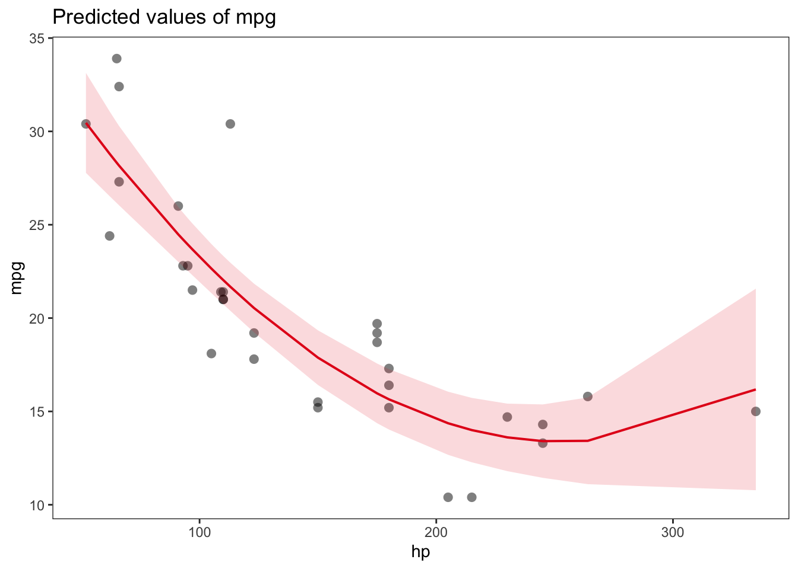
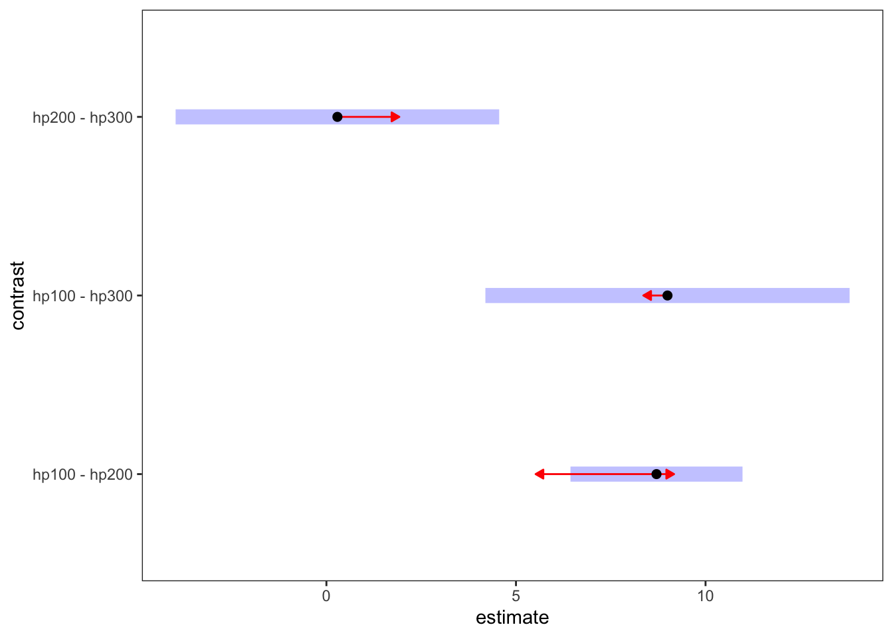
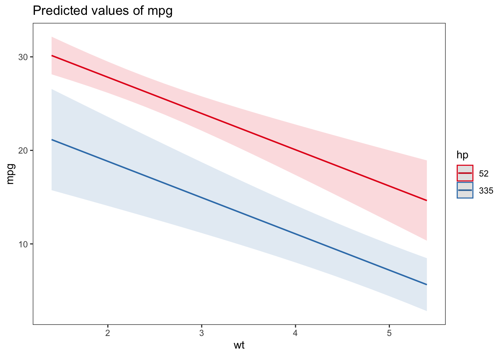
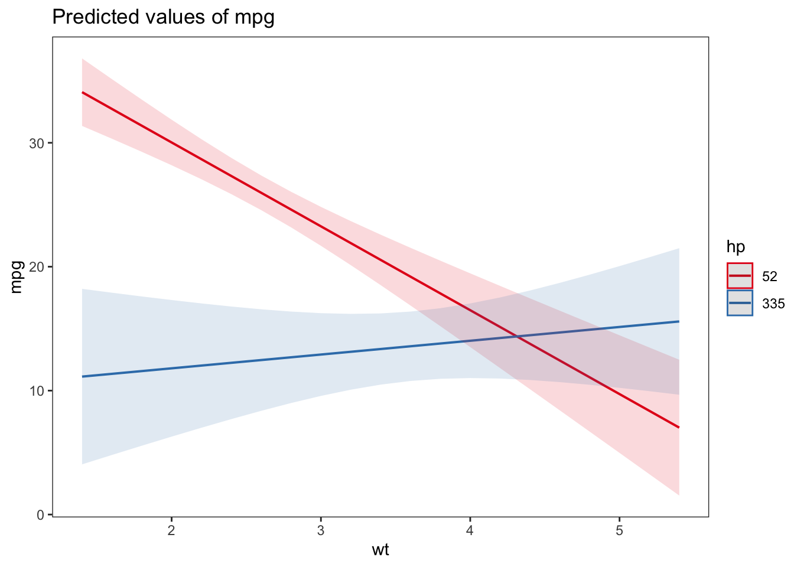

library(tidyverse)
library(emmeans)
library(sjPlot)
theme_set(theme_test())From model to meaning
Additional resources
Setup environment
Read and prep data
cars dataset
A data frame with 32 observations on 11 (numeric) variables.
mpg |
Miles/(US) gallon |
cyl |
Number of cylinders |
disp |
Displacement (cu.in.) |
hp |
Gross horsepower |
drat |
Rear axle ratio |
wt |
Weight (1000 lbs) |
qsec |
1/4 mile time |
vs |
Engine (0 = V-shaped, 1 = straight) |
am |
Transmission (0 = automatic, 1 = manual) |
gear |
Number of forward gears |
carb |
Number of carburetors |
cars <- mtcars |>
mutate(cyl = factor(cyl),
vs = factor(vs),
am = factor(am),
gear = factor(gear),
carb = factor(carb)) |>
rownames_to_column("car")
carswages dataset
set.seed(10)
wages <- ISLR::Wage |>
mutate(age_cat = case_when(
age < 40 ~ "1. Young",
TRUE ~ "2. Old"
)) |>
slice_sample(n = 50, by = jobclass)
wagesBetter summaries
m <- lm(mpg ~ cyl, data = cars)
supernova::supernova(m) Analysis of Variance Table (Type III SS)
Model: mpg ~ cyl
SS df MS F PRE p
----- --------------- | -------- -- ------- ------ ----- -----
Model (error reduced) | 824.785 2 412.392 39.698 .7325 .0000
Error (from model) | 301.263 29 10.388
----- --------------- | -------- -- ------- ------ ----- -----
Total (empty model) | 1126.047 31 36.324 summary(m)
Call:
lm(formula = mpg ~ cyl, data = cars)
Residuals:
Min 1Q Median 3Q Max
-5.264 -1.836 0.029 1.389 7.236
Coefficients:
Estimate Std. Error t value Pr(>|t|)
(Intercept) 26.664 0.972 27.44 < 0.0000000000000002 ***
cyl6 -6.921 1.558 -4.44 0.00012 ***
cyl8 -11.564 1.299 -8.90 0.00000000086 ***
---
Signif. codes: 0 '***' 0.001 '**' 0.01 '*' 0.05 '.' 0.1 ' ' 1
Residual standard error: 3.22 on 29 degrees of freedom
Multiple R-squared: 0.732, Adjusted R-squared: 0.714
F-statistic: 39.7 on 2 and 29 DF, p-value: 0.00000000498plot_model(m, type = "pred", terms = "cyl", show.data = TRUE, jitter = TRUE) + expand_limits(y = 0)
emm <- emmeans(m, "cyl") # or emmeans(model, ~ cyl)
emm cyl emmean SE df lower.CL upper.CL
4 26.7 0.972 29 24.7 28.7
6 19.7 1.220 29 17.3 22.2
8 15.1 0.861 29 13.3 16.9
Confidence level used: 0.95 contrast(emm, "pairwise") # or pairs(emm) contrast estimate SE df t.ratio p.value
cyl4 - cyl6 6.92 1.56 29 4.441 0.0003
cyl4 - cyl8 11.56 1.30 29 8.905 <.0001
cyl6 - cyl8 4.64 1.49 29 3.112 0.0112
P value adjustment: tukey method for comparing a family of 3 estimates pairs(emm) |> plot()
emmeans(m, pairwise ~ cyl)$emmeans
cyl emmean SE df lower.CL upper.CL
4 26.7 0.972 29 24.7 28.7
6 19.7 1.220 29 17.3 22.2
8 15.1 0.861 29 13.3 16.9
Confidence level used: 0.95
$contrasts
contrast estimate SE df t.ratio p.value
cyl4 - cyl6 6.92 1.56 29 4.441 0.0003
cyl4 - cyl8 11.56 1.30 29 8.905 <.0001
cyl6 - cyl8 4.64 1.49 29 3.112 0.0112
P value adjustment: tukey method for comparing a family of 3 estimates Means in estimated marginal means does not mean average
It could be medians, probabilities/proportions, etc.
m <- glm(am ~ cyl, data = cars, family = binomial)
supernova::supernova(m) Analysis of Variance Table (Type III SS)
Model: am ~ cyl
SS df MS F PRE p
----- --------------- | ------- -- ----- ----- ----- -----
Model (error reduced) | 2.108 2 1.054 0.154 .0105 .8579
Error (from model) | 198.375 29 6.841
----- --------------- | ------- -- ----- ----- ----- -----
Total (empty model) | 132.664 31 4.279 summary(m)
Call:
glm(formula = am ~ cyl, family = binomial, data = cars)
Coefficients:
Estimate Std. Error z value Pr(>|z|)
(Intercept) 0.981 0.677 1.45 0.1474
cyl6 -1.269 1.021 -1.24 0.2139
cyl8 -2.773 1.021 -2.72 0.0066 **
---
Signif. codes: 0 '***' 0.001 '**' 0.01 '*' 0.05 '.' 0.1 ' ' 1
(Dispersion parameter for binomial family taken to be 1)
Null deviance: 43.230 on 31 degrees of freedom
Residual deviance: 33.935 on 29 degrees of freedom
AIC: 39.93
Number of Fisher Scoring iterations: 4emm <- emmeans(m, "cyl", type = "response")
emm cyl prob SE df asymp.LCL asymp.UCL
4 0.727 0.1340 Inf 0.414 0.909
6 0.429 0.1870 Inf 0.144 0.770
8 0.143 0.0935 Inf 0.036 0.427
Confidence level used: 0.95
Intervals are back-transformed from the logit scale Reference grid
m <- lm(mpg ~ gear + am + hp, data = cars)ref_grid(m)'emmGrid' object with variables:
gear = 3, 4, 5
am = 0, 1
hp = 146.69mean(cars$hp)[1] 146.7ref_grid(m) |> as_tibble()One categorical predictor
m <- lm(mpg ~ cyl, data = cars)ref_grid(m)'emmGrid' object with variables:
cyl = 4, 6, 8ref_grid(m) |> as_tibble()emmeans(m, "cyl") cyl emmean SE df lower.CL upper.CL
4 26.7 0.972 29 24.7 28.7
6 19.7 1.220 29 17.3 22.2
8 15.1 0.861 29 13.3 16.9
Confidence level used: 0.95 emmeans(m, "cyl") |> contrast("pairwise") contrast estimate SE df t.ratio p.value
cyl4 - cyl6 6.92 1.56 29 4.441 0.0003
cyl4 - cyl8 11.56 1.30 29 8.905 <.0001
cyl6 - cyl8 4.64 1.49 29 3.112 0.0112
P value adjustment: tukey method for comparing a family of 3 estimates emmeans(m, pairwise ~ cyl)$emmeans
cyl emmean SE df lower.CL upper.CL
4 26.7 0.972 29 24.7 28.7
6 19.7 1.220 29 17.3 22.2
8 15.1 0.861 29 13.3 16.9
Confidence level used: 0.95
$contrasts
contrast estimate SE df t.ratio p.value
cyl4 - cyl6 6.92 1.56 29 4.441 0.0003
cyl4 - cyl8 11.56 1.30 29 8.905 <.0001
cyl6 - cyl8 4.64 1.49 29 3.112 0.0112
P value adjustment: tukey method for comparing a family of 3 estimates emmeans(m, pairwise ~ cyl, infer = TRUE)$emmeans
cyl emmean SE df lower.CL upper.CL t.ratio p.value
4 26.7 0.972 29 24.7 28.7 27.437 <.0001
6 19.7 1.220 29 17.3 22.2 16.206 <.0001
8 15.1 0.861 29 13.3 16.9 17.529 <.0001
Confidence level used: 0.95
$contrasts
contrast estimate SE df lower.CL upper.CL t.ratio p.value
cyl4 - cyl6 6.92 1.56 29 3.072 10.77 4.441 0.0003
cyl4 - cyl8 11.56 1.30 29 8.356 14.77 8.905 <.0001
cyl6 - cyl8 4.64 1.49 29 0.958 8.33 3.112 0.0112
Confidence level used: 0.95
Conf-level adjustment: tukey method for comparing a family of 3 estimates
P value adjustment: tukey method for comparing a family of 3 estimates emmeans(m, "cyl") |> pwpm() 4 6 8
4 [26.7] 0.0003 <.0001
6 6.92 [19.7] 0.0112
8 11.56 4.64 [15.1]
Row and column labels: cyl
Upper triangle: P values adjust = "tukey"
Diagonal: [Estimates] (emmean)
Lower triangle: Comparisons (estimate) earlier vs. lateremmeans(m, "cyl") |> contrast("pairwise") |> plot(comparisons = TRUE)
One numeric predictor
m <- lm(mpg ~ hp, data = cars)ref_grid(m)'emmGrid' object with variables:
hp = 146.69ref_grid(m) |> as_tibble()emmeans(m, "hp") hp emmean SE df lower.CL upper.CL
147 20.1 0.683 30 18.7 21.5
Confidence level used: 0.95 emmeans(m, "hp", cov.reduce = fivenum) hp emmean SE df lower.CL upper.CL
52 26.55 1.180 30 24.15 29.0
96 23.55 0.854 30 21.80 25.3
123 21.71 0.724 30 20.23 23.2
180 17.82 0.762 30 16.26 19.4
335 7.24 2.020 30 3.11 11.4
Confidence level used: 0.95 emmeans(m, "hp", at = list(hp = fivenum(cars$hp))) hp emmean SE df lower.CL upper.CL
52 26.55 1.180 30 24.15 29.0
96 23.55 0.854 30 21.80 25.3
123 21.71 0.724 30 20.23 23.2
180 17.82 0.762 30 16.26 19.4
335 7.24 2.020 30 3.11 11.4
Confidence level used: 0.95 ref_grid(m, cov.reduce = fivenum) |> as_tibble()m <- lm(mpg ~ poly(hp, 2), data = cars)
plot_model(m, type = "pred", show.data = TRUE)Data points may overlap. Use the `jitter` argument to add some amount of
random variation to the location of data points and avoid overplotting.
emmeans(m, "hp", at = list(hp = c(100, 200, 300))) hp emmean SE df lower.CL upper.CL
100 23.3 0.662 29 21.9 24.6
200 14.6 0.820 29 12.9 16.3
300 14.3 1.740 29 10.7 17.8
Confidence level used: 0.95 emmeans(m, pairwise ~ hp, at = list(hp = c(100, 200, 300)))$emmeans
hp emmean SE df lower.CL upper.CL
100 23.3 0.662 29 21.9 24.6
200 14.6 0.820 29 12.9 16.3
300 14.3 1.740 29 10.7 17.8
Confidence level used: 0.95
$contrasts
contrast estimate SE df t.ratio p.value
hp100 - hp200 8.71 0.919 29 9.477 <.0001
hp100 - hp300 9.00 1.940 29 4.626 0.0002
hp200 - hp300 0.29 1.730 29 0.168 0.9846
P value adjustment: tukey method for comparing a family of 3 estimates emmeans(m, "hp", at = list(hp = c(100, 200, 300))) |> contrast("pairwise") |> plot(comparisons = TRUE)
One categorical and one numeric predictor
m <- lm(wage ~ jobclass + age, data = wages)ref_grid(m)'emmGrid' object with variables:
jobclass = 1. Industrial, 2. Information
age = 41.39ref_grid(m) |> as_tibble()emmeans(m, "jobclass") jobclass emmean SE df lower.CL upper.CL
1. Industrial 99.9 5.33 97 89.4 111
2. Information 116.4 5.33 97 105.8 127
Confidence level used: 0.95 emmeans(m, "age", by = "jobclass", at = list(age = c(25, 45, 65)))jobclass = 1. Industrial:
age emmean SE df lower.CL upper.CL
25 85 7.33 97 70.5 99.5
45 103 5.51 97 92.3 114.2
65 121 9.49 97 102.6 140.3
jobclass = 2. Information:
age emmean SE df lower.CL upper.CL
25 101 7.67 97 86.2 116.6
45 120 5.40 97 108.9 130.4
65 138 9.09 97 119.8 155.9
Confidence level used: 0.95 emmeans(m, ~ age | jobclass, at = list(age = c(25, 45, 65)))jobclass = 1. Industrial:
age emmean SE df lower.CL upper.CL
25 85 7.33 97 70.5 99.5
45 103 5.51 97 92.3 114.2
65 121 9.49 97 102.6 140.3
jobclass = 2. Information:
age emmean SE df lower.CL upper.CL
25 101 7.67 97 86.2 116.6
45 120 5.40 97 108.9 130.4
65 138 9.09 97 119.8 155.9
Confidence level used: 0.95 Two categorical predictors
m <- lm(mpg ~ am + cyl, data = cars)ref_grid(m)'emmGrid' object with variables:
am = 0, 1
cyl = 4, 6, 8ref_grid(m) |> as_tibble()emmeans(m, "cyl") cyl emmean SE df lower.CL upper.CL
4 26.1 0.972 28 24.1 28.1
6 19.9 1.170 28 17.5 22.3
8 16.0 0.943 28 14.1 17.9
Results are averaged over the levels of: am
Confidence level used: 0.95 emmeans(m, ~ cyl | am)am = 0:
cyl emmean SE df lower.CL upper.CL
4 24.8 1.320 28 22.1 27.5
6 18.6 1.290 28 16.0 21.3
8 14.7 0.842 28 13.0 16.5
am = 1:
cyl emmean SE df lower.CL upper.CL
4 27.4 0.992 28 25.3 29.4
6 21.2 1.380 28 18.4 24.0
8 17.3 1.380 28 14.5 20.1
Confidence level used: 0.95 Two numeric predictors
m <- lm(mpg ~ hp + wt, data = cars)ref_grid(m)'emmGrid' object with variables:
hp = 146.69
wt = 3.2172ref_grid(m) |> as_tibble()emmeans(m, "hp") hp emmean SE df lower.CL upper.CL
147 20.1 0.458 29 19.2 21
Confidence level used: 0.95 emmeans(m, "wt") wt emmean SE df lower.CL upper.CL
3.22 20.1 0.458 29 19.2 21
Confidence level used: 0.95 emmeans(m, "wt", by = "hp")hp = 147:
wt emmean SE df lower.CL upper.CL
3.22 20.1 0.458 29 19.2 21
Confidence level used: 0.95 ref_grid(m, cov.reduce = range)'emmGrid' object with variables:
hp = 52, 335
wt = 1.513, 5.424emmeans(m, "hp", cov.reduce = range) hp emmean SE df lower.CL upper.CL
52 22.1 1.07 29 19.94 24.3
335 13.1 1.66 29 9.73 16.5
Results are averaged over the levels of: wt
Confidence level used: 0.95 emmeans(m, "wt", cov.reduce = range) wt emmean SE df lower.CL upper.CL
1.51 25.2 1.47 29 22.21 28.2
5.42 10.0 1.25 29 7.49 12.6
Results are averaged over the levels of: hp
Confidence level used: 0.95 emmeans(m, "wt", by = "hp", cov.reduce = range)hp = 52:
wt emmean SE df lower.CL upper.CL
1.51 29.71 0.943 29 27.78 31.64
5.42 14.54 2.110 29 10.22 18.86
hp = 335:
wt emmean SE df lower.CL upper.CL
1.51 20.72 2.580 29 15.43 26.00
5.42 5.55 1.390 29 2.71 8.39
Confidence level used: 0.95 without interaction
lm(mpg ~ hp + wt, data = cars) |>
plot_model(type = "pred", terms = c("wt", "hp[52, 335]"))
lm(mpg ~ hp + wt, data = cars) |>
emmeans(pairwise ~ wt | hp, cov.reduce = range)$emmeans
hp = 52:
wt emmean SE df lower.CL upper.CL
1.51 29.71 0.943 29 27.78 31.64
5.42 14.54 2.110 29 10.22 18.86
hp = 335:
wt emmean SE df lower.CL upper.CL
1.51 20.72 2.580 29 15.43 26.00
5.42 5.55 1.390 29 2.71 8.39
Confidence level used: 0.95
$contrasts
hp = 52:
contrast estimate SE df t.ratio p.value
wt1.513 - wt5.424 15.2 2.47 29 6.129 <.0001
hp = 335:
contrast estimate SE df t.ratio p.value
wt1.513 - wt5.424 15.2 2.47 29 6.129 <.0001with interaction
lm(mpg ~ hp * wt, data = cars) |>
plot_model(type = "pred", terms = c("wt", "hp[52, 335]"))
lm(mpg ~ hp * wt, data = cars) |>
emmeans(pairwise ~ wt | hp, cov.reduce = range)$emmeans
hp = 52:
wt emmean SE df lower.CL upper.CL
1.51 33.32 1.24 28 30.78 35.9
5.42 6.85 2.70 28 1.33 12.4
hp = 335:
wt emmean SE df lower.CL upper.CL
1.51 11.26 3.31 28 4.48 18.0
5.42 15.61 2.92 28 9.63 21.6
Confidence level used: 0.95
$contrasts
hp = 52:
contrast estimate SE df t.ratio p.value
wt1.513 - wt5.424 26.47 3.65 28 7.261 <.0001
hp = 335:
contrast estimate SE df t.ratio p.value
wt1.513 - wt5.424 -4.35 5.59 28 -0.778 0.4430